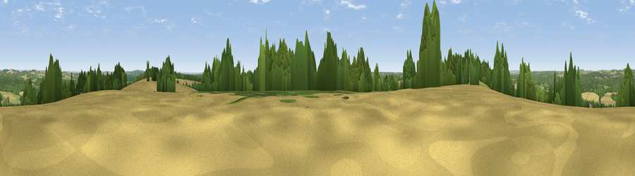

Admiralty Down
#15972 in England · top 9% of its area beats it · near West DeanWhere it is
The exact computed spot (SU 25179 25794). Click the marker for map links.
The view, rendered

A 360° render of this exact spot computed from the terrain model, tree cover and land cover — summer colours, afternoon light, calibrated against photographs of famous viewpoints. Real trees, hedges and buildings will differ in detail.
The panorama
Grey silhouette: terrain skyline in each direction (720 bearings, Earth curvature and refraction included). Dashed green: skyline with trees (+15 m) and buildings (+8 m) as obstacles. Blue strip: how far the ground is visible on each bearing.
Where the view opens
Wedge length = distance to the farthest visible ground on that bearing (vegetation-aware). Rings at 10, 25 and 50 km.
What fills the view
39% woodland · 35% cropland · 25% grassland · 1% built-up
Angular shares of the visible panorama (visual magnitude), not map area. Landscape diversity 0.49 (0–1 Shannon).
Key numbers
More beautiful places nearby
The staircase of upgrades: each row has a higher view potential than everything closer. Driving times are estimates from straight-line distance, calibrated against real road routing — check an actual route before setting out.
| Place | Direction | Drive | Score |
|---|---|---|---|
| Dean Hill | W · 1 km | ~2 min | 59.6 |
| Viewpoint near West Grimstead | WSW · 5 km | ~11 min | 62.7 |
| Viewpoint near Sparsholt | ENE · 15 km | ~27 min | 66.9 |
| Viewpoint near Bulford | NNW · 18 km | ~31 min | 70.3 |
| Monk's Down | W · 32 km | ~50 min | 74.4 |
| Viewpoint near Berwick St John | W · 33 km | ~51 min | 78.2 |
| Viewpoint near Middleton | S · 41 km | ~61 min | 78.9 |
| Tennyson Down | S · 41 km | ~61 min | 83.2 |
51.03096, -1.64232 · source: osm peak · position refined by local search. Computed location — check access rights before visiting.